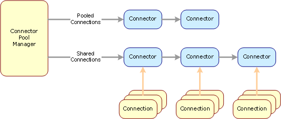
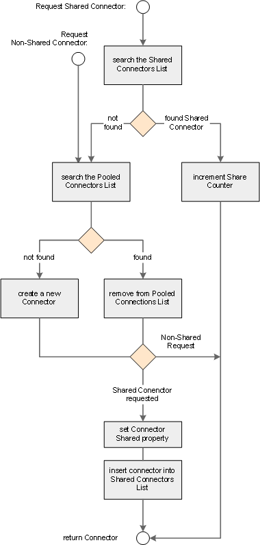

| ← Connector Pooling Overview | Up | Connector → |
Last update: 2002-06-21 19:00:00 by usp • Category: Internal documentation • Intended Audience: Npgsql Developers
This document describes the Npgsql Connector Pool class.
The connector pool manager is a unique, static instance of the Npgsql.ConnectionPool class named ConnectionPoolMgr. It controls requesting and release of connector objects and maintains internal lists of shared and pooled connectors.
The ConnectionPool class interface consist of the following method:
There is not much to tell about the internal structure. The connector pool consist primarily of 2 lists: The pooled connectors, currently not in use by the application, and the shared connectors. Note that connectors in the shared connectors list are in use, referenced by one or more Connection objects and thus are not avaliable for requests other than shared.
| 
The algorithm for requesting a connector is quit simple. If a shared connector is requested the pool manager starts with searching the SharedConnectors list for a connector with a matching connect string. If a suitable connector is found, its ShareCounter gets incremented to reflect the number of Connections working on this connector. Then the connector object is returned to the calling connection object. If a non-shared connector is requested or a shared connector was not found, the pooled connectors are beeing searched for a suitable connector. If a connector was found, it is removed from the pooled connectors list. If the search fails, then an new connector is created and the physical connection is opened instead. For a non-shared connector the work is done now. A shared connector request is treated different at this point: It's Shared property is set, and the connector is inserted in the shared connectors list, before it is returned to the calling connection object. |
Further insight into a connector object and its interaction with the connector pool manager gives the Connector class documentation.
... can be inspected here